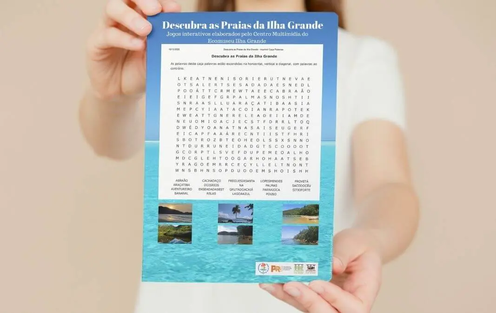

Caça Palavras: Praias da Ilha Grande
A Ilha Grande é conhecida principalmente por sua beleza natural: repleta de rios, cachoeiras e costões. As praias são os principais atrativos da região. Selecionamos algumas...
JogarO Centro Multimídia (CeMu) é o núcleo responsável por realizar pesquisa sistemática de matérias presentes na imprensa, em documentários e filmes já produzidos na Ilha Grande. Tem como objetivo contribuir para a historiografia – registro e memória – sobre o local, em termos de patrimônio, história e cultura, por meio das mídias digitais, garantindo ao cidadão o acesso à informação.

História e a memória da Ilha Grande.
Atividades realizadas pelo Centro Multimídia.
Exposições tecnológicas através da web.
Banco de dados digitalizado
A Ilha Grande é conhecida principalmente por sua beleza natural: repleta de rios, cachoeiras e costões. As praias são os principais atrativos da região. Selecionamos algumas...
JogarO uso das plantas medicinais garantiu ao povo caiçara um amplo conhecimento sobre a flora da Ilha Grande. A íntima relação com a natureza proporcionou aos...
JogarDescubra o fascinante universo do Ecomuseu Ilha Grande através de um acervo online incrível! Com vídeos exclusivos e dicas de filmes relacionados ao equipamento cultural. Clique no botão abaixo e venha explorar!
Fique por dentro das novidades do Ecomuseu Ilha Grande! Em nossa galeria de notícias, você encontrará informações atualizadas sobre nossas atividades e projetos. Confira agora!

Localizado em Vila Dois Rios, área de proteção ambiental, o Ecomuseu Ilha Grande da Uerj vem se consolidando como atração turística da Costa Verde. Além da beleza natural, história...
Saiba mais
Entre 1938 e 1945, durante o Estado Novo, centenas de presos foram enviados para a Ilha Grande para colocarem de pé as novas estruturas penitenciárias de Dois Rios. Aliado ao arbítrio...
Saiba mais
Após nove meses fechado, por falta de recursos para manutenção, a Universidade do Estado do Rio de Janeiro (Uerj) reabriu hoje (15) o Ecomuseu Ilha Grande, localizado na Ilha Grande...
Saiba mais
O Ecomuseu Ilha Grande da Uerj está promovendo uma campanha de doação de livros para novas bibliotecas comunitárias nas praias da região. Os materiais solicitados são gibis, livros...
Saiba mais
Contação de histórias e brincadeiras marcaram a inauguração da Biblioteca Comunitária do Ecomuseu Ilha Grande da UERJ, na praia de Palmas, litoral sul fluminense, , esta semana...
Saiba mais
O prefeito Tuca Jordão, representando o município de Angra dos Reis, participou, junto com o governador Sérgio Cabral e o reitor da Uerj, Ricardo Vieiralves, da inauguração...
Saiba mais
A aplicação do conhecimento científico como alicerce para o uso sustentável dos oceanos é uma das metas previstas na agenda internacional das Nações Unidas, que definiu o período...
Saiba mais
Um projeto de lei complementar polêmico tramita na Assembleia Legislativa do Estado do Rio de Janeiro (Alerj). Trata-se do 41/2021. De autoria da deputada Célia Jordão (Patriotas)...
Saiba mais
Em 6 de janeiro de 1502, portugueses em uma expedição de caravelas avistaram a Baía da Ilha Grande, onde hoje estão os municípios de Angra dos Reis e Paraty...
Saiba mais


Entre em contato através dos nossos telefones, rede sociais e e-mail institucional.
Contato{kind=link}
{kind=link}
{kind=link}
{kind=link}
{kind=link}